Дизайн окон загородного дома.

Как и во всяком жилище, окна в загородном доме (их конструкция, дизайн, декор) занимают одно из первых мест по важности, действенности, активности внимания на художественный образ интерьеров. В дизайне окон наиболее органично соединены конструктивное и декоративное начало, внешнее и внутреннее строение.
Внимание
Достаточно освещенным по дизайнерским и гигиеническим нормам считается помещение с окнами, имеющими площадь, составляющую не менее 10 % от площади пола этого помещения. Поэтому, если в комнате и без того небольшое окно, не стоит загромождать его пышным декором тяжелых портьер, фильтровать свет через жалюзи и т. п. ради эффектного дизайна.
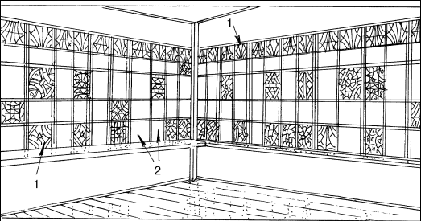
Рис. 28. Пример витражного оформления окон террасы. Сочетание сплошного верхнего витражного ряда с чередующимися квадратами чистого и витражного стекла:
1 – витражи; 2 – чистые стекла
Маленькое окошко над дверью в прихожей, поскольку оно не играет решающей роли в освещении, лучше задекорировать витражным стеклом, либо расписать специальными красками по стеклу, имеющимися в продаже в художественных салонах. Окна террасы лучше всего воспримут живописный эффект цветного света, льющегося в интерьер через разноцветные стекла (рис. 28, 29).
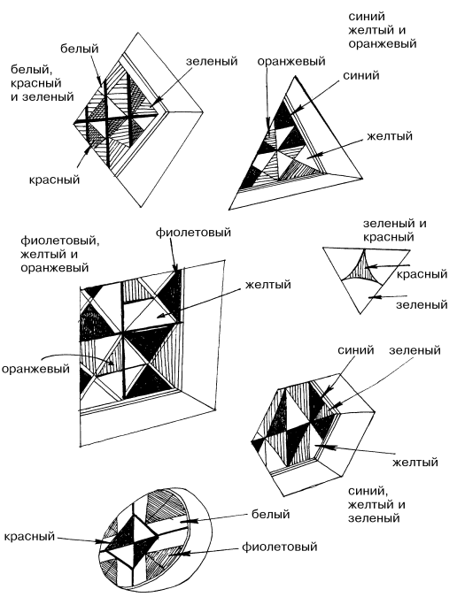
Рис. 29. Примеры возможного цветового решения маленького витражного окошка
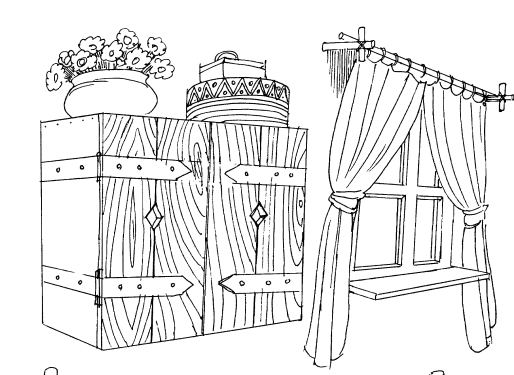
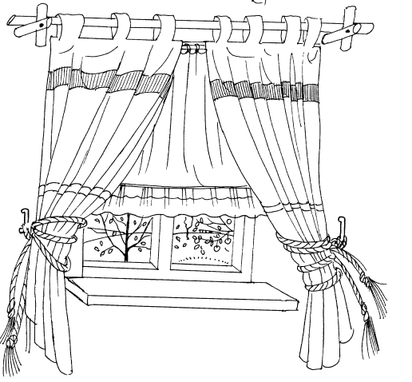
Рис. 30. Вариант оформления окна
Крестообразные кронштейны для установки штанги с кольцами для штор в силу своей естественности, ясности и простоты открытой конструкции хорошо сочетаются с классическими деревянными полками на стенах рядом с окном, украшенными дверными петлями с длинными «языками» (рис. 30).
Классическим примером украшения стекол прихожих, гостиных, кабинетов, террас в архитектуре русских усадеб было заполнение цветным геометрическим орнаментом одного-двух верхних рядов остекления оконных переплетов. К этому можно добавить витражи на некоторых других квадратах и прямоугольниках, образуемых переплетом окна.
Конструкция держателей (кронштейнов, карнизов) для штор желательна классического типа – со штангой и кольцами. Потолочный карниз меньше подходит к интерьеру загородного дома. Сама штанга может иметь крепление к неподвижным, крестообразным кронштейнам, прикрепляться на крючки, ввинченные в стену, или закрепляться лишь одним концом на привинченном к стене штативе с поворотными петлями, что дает возможность разворачивать занавес внутрь интерьера, перпендикулярно плоскости окна, и использовать его в качестве ширмы, интерьерной завесы, преграды, разделяющей интерьер на зоны.
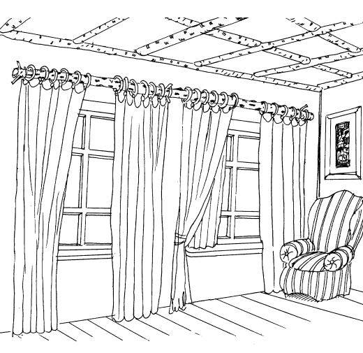
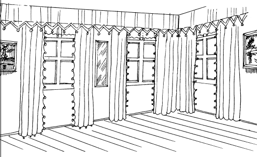
Рис. 31, Варианты оформления окон
Сами штанги ровные, цилиндрические, тонов естественного, натурального дерева, и могут быть изготовлены из неструганых березовых жердей с черно-белой корой, являющихся продолжением аналогичной из тонких березовых стволов собранной конструкции по всей площади потолка помещения (рис. 31).
Совет
Шторы могут крепиться не только на кольца, но и на широкие петли, которые являются продолжением самого полотна штор, и подвязываться декоративными шнурами к кронштейнам в стене.
Простым, удобным и красивым является способ подвешивания штор без карнизов и штанг – прямо на крючки, укрепленные в стене над окном (рис. 32).
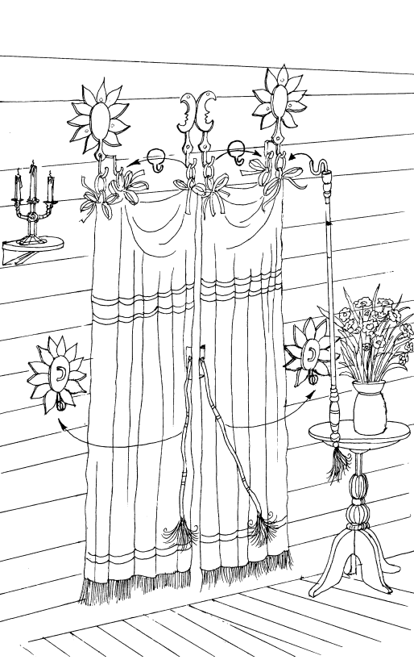
Рис. 32. Шторы оригинальной конструкции
К окнам и дверям сельского, загородного деревянного жилища, в соответствии со стилем окружающей природы и укладом жизни в нем, лучше всего подойдут достаточно простые по форме, крупные (возможно – массивные), ясные по конструкции оконные и дверные ручки, деревянные или металлические, не хромированные, не никелированные. Пластмассовых лучше избегать как на мебели, так и на окнах и дверях. Желательно, чтобы на ручках, защелках, замках не было обилия мелких, дробных по масштабу украшений (слишком тонкого и «запутанного» орнамента, многочисленных узоров).
Окна – глаза дома.Они не должны быть безликими ни снаружи, ни изнутри. Через окна природа заглядывает в дом. Поэтому необходимо комплексное «двухстороннее» решение дизайна окон загородного дома. Можно предложить несколько вариантов как наружного, так и внутреннего оформления окон.
Снаружи в перечень элементов дизайна окон входят: ставни, жалюзи, тенты, навесы и т. п. В зависимости от сезона – летнего, осеннего, зимнего дизайн окон, естественно, должен меняться – как снаружи, так и внутри. Поэтому устройство всех деталей должно быть подвижным, мобильным, сменяемым в зависимости от условий и желаний.
Ставни можно вешать на петли как снаружи, так и внутри, в интерьере. Наружные ставни могут быть как глухие, так и жалюзиобразные – с прорезями, щелями (вертикальными, но чаще – горизонтальными).
Внутренние ставни– исключительно жалюзиобразные. Они, как правило, представляют собой раму, вначале – пустую внутри, в которую затем от одной длинной вертикальной перекладины до другой на небольшом расстоянии укрепляют наклонные дощечки, между которыми проходит свет и воздух. Внутренние ставни можно оставить цвета натурального дерева, наружные ставни обязательно красят в неяркие, спокойные, «экологичные» цвета – спокойный зеленый, коричневый, серый, охристый и т. п.
Если наружные ставни не глухие, а с прорезями, то дощечки, между которыми образуются эти прорези, должны иметь наклон вниз, к земле, направленный изнутри-наружу.
Если створки окна раскрываются вовне, на улицу, то внутренние ставни могут оказаться очень удобными, функциональными, как препятствие для жаркого воздуха и солнечного света в летний сезон. Если преследуется цель минимального поступления света через внутренние ставни-жалюзи, то дощечки-перегородки укрепляются в рамах
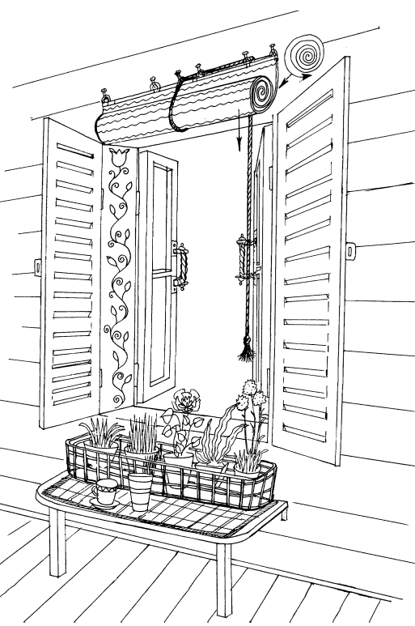
Рис. 33. Конструкция и оформление окна загородного дома для летнего сезона. У окна – внутренние створчатые жалюзи. Над окном – свернутые плетеные жалюзи
Дневной свет, входящий в интерьер сверху, под некоторым острым углом, будет частично проникать в комнату, проходя между ребрами дощечек. Яркий свет, просеиваясь через такие ставни-жалюзи, «одевает» интерьер – стены, пол, мебель в узор из светлых горизонтальных полос.
Однако более удобны и функциональны поворачивающиеся жалюзи в ставнях. Их достаточно простое устройство таково, что позволяет менять угол и направление наклона дощечек-перегородок. Для этого достаточно прикреплять их так, (на таком расстоянии друг от друга), чтобы в вертикальном положении эти деревянные пластины не только соприкасались своими ребрами, но слегка (на 2–3 мм) находили друг на друга («внахлест»); кроме этого, дощечки крепятся подвижно – каждая на двух гвоздях, проходящих через вертикальные перекладины рам ставней и входящие в торцы дощечки в заранее просверленные отверстия, диаметр которых равен диаметру гвоздя.
Шляпки у гвоздей могут быть спилены, либо «откушены». Для того, чтобы можно было одновременно, одним движением поворачивать все дощечки ставен на нужный угол (горизонтально, вертикально, под наклоном внутрь или наружу), к правому (как правило) краю рамы крепится длинная, тонкая рейка, которая держится на маленьких (равномерно расположенных вдоль всей ее высоты) крючках, совпадающих (и надевающихся) на соответствующие каждому крючку петли на правом краю (конце ребра) каждой дощечки. Рейка снабжена небольшой круглой ручкой. Поднимая или опуская рейку вдоль плоскости окна на несколько сантиметров, можно заставить дощечки синхронно вращаться вокруг своих осей, достигая желаемой степени прохождения света через щели между ними.
Изнутри и снаружи коробки окна можно повесить плетеные, сворачивающиеся вверх, солнцезащитные тенты-жалюзи. Они не могут быть полностью заменены ставнями, поскольку ставни закрывают снизу до верху все окно, тогда как высоту (уровень) спускания плетеного тента можно регулировать, распуская или скручивая его при помощи обхватывающей рулон и свисающей вниз веревки, шнура (рис. 33).
Если снаружи окна, над верхней перекладиной наличника укрепить П-образную сварную или гнутую из железного прута штангу, а по бокам окна, снаружи, в стене укрепить два-четыре железных крючка, то эта конструкция может быть используема для подвески тента, который служит защитой от солнца и не препятствует, вместе с тем, свободной циркуляции воздуха, поскольку висит на некотором расстоянии (соответствующем высоте ножек П-образного кронштейна) от плоскости окна.
Совет
Чтобы тент не развивался от ветра, сквозняка, его привязывают шнурами за петли к крючкам в стене. Ткань для тента лучше выбрать льняную – гладко-окрашенную с бордюром из орнамента по краям, либо полосатую.
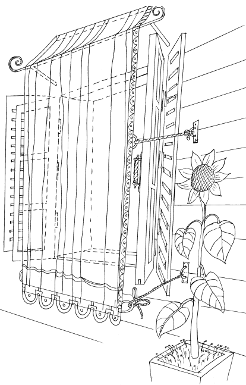
Рис. 34. Модель устройства подвесного тента на внешней стороне окна
Можно специально сшить двух-трехслойный хлопчатобумажный тент, наружная и внутренняя стороны которого имеют разный цвет и орнамент. Три слоя ткани необходимы, поскольку хлопок легче пропускает яркий солнечный свет, чем ткань из льна.
Однослойный хлопчатобумажный тент выполняет лишь функцию украшения окна снаружи, но почти не спасает от прямых, горячих лучей солнца во второй половине дня, если окна выходят на запад или юго-запад. Тент крепится к рейке, прибитой над окном к стене, выше П-образного кронштейна на 40–50 см, перекидывается через перекладину кронштейна и свободно свисает вниз, фиксируемый шнурами к стене, как показано на рисунке [1] (рис. 34, 35).
Внутреннюю поверхность коробки окна между наружной и внутренней рамами можно расписать масляной краской, тонкой мягкой кистью несложным растительным орнаментом, который можно придумать самостоятельно или позаимствовать с понравившейся ткани.
Внимание
При большом количестве в доме цветов и рассады в горшках в летнее время их можно удобно и красиво расположить со стороны улицы, снаружи под окном. Для этого можно использовать длинные решетчатые ящики-корзины из проволоки, диаметром 5–7 мм или железного прута, или железной ленты.
Ящики-корзины подвешиваются под окна в один-два-три яруса, в зависимости от высоты расположения окон. Нижний ящик можно просто поставить на землю.
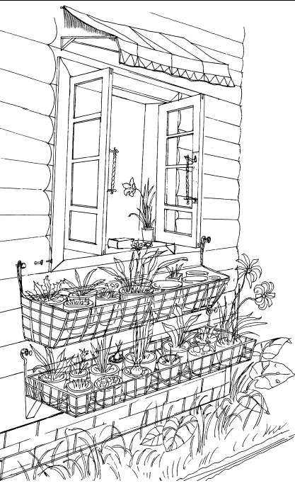
Рис. 35. Модель подвески решетчатых корзин для цветов
С внутренней стороны окна (в интерьере) можно также подвесить такие же длинные проволочные корзины – на одном уровне с подоконником или на 5–8 см ниже его. Проволочный ящик можно поставить под подоконник на откидной столик с подгибающимися ножками, либо на длинную полку над подоконником, так называемый «второй подоконник» (рис. 33).
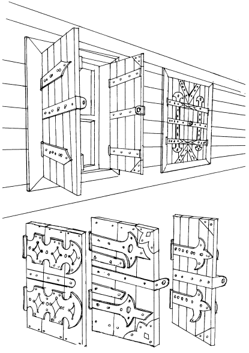
Рис. 36. Модели наружных ставен на окнах
Наружные, глухие ставни делаются, как правило, из досок (лучше – дубовых, как более прочных и менее подверженных гниению) (рис. 36).Сосновые ставни красятся в два-три слоя масляной краской. Дубовые, лиственные, березовые – пропитываются олифой с небольшим количеством растворенной в ней черной или коричневой краски. Раствор краски в олифе должен быть обязательно прозрачным, просвечивающим при нанесении его тонким слоем, а не кроющим (глухим). В этом случае ставни приобретают красивый тон старого «мореного» дерева, фактура которого и рисунок годовых колец на нем сохраняются. Кроме того, поверхность ставен предохраняется этим от сырости. Обработка досок ставен морилками, а затем – лаком – менее удобна и менее красива, поскольку в этом случае ставни приобретают несколько «бутафорский», театральный, менее естественный вид. Ни в коем случае не следует применять прием обжигания поверхности ставен паяльной лампой. Этот способ «украсить» деревянную поверхность поможет лишь безнадежно испортить ее внешний вид с точки зрения вкуса.
Кроме этого, доски внешних ставен не должны иметь яркого лакового блеска. Поэтому обработка олифой с масляной краской – более целесообразна. Доски ставен соединяются шпонками, проходящими с внутренней (интерьерной) стороны закрытых ставен. Шпонки могут быть как врезными, так и накладными. На одну ставню обычно приходится две-три шпонки, в зависимости от требований прочности. Края шпонок срезаются под углом 30°. Вместо деревянных шпонок вертикальные доски ставен могут соединяться посредством отрезков железной полосы, желательно как можно большей ширины (не менее 40 мм). Длина каждого отрезка должна быть равна ширине ставни. Возможна двусторонняя, сквозная обхватка ставен отрезками металлической полосы, когда заклепки или винты с гайками проходят сначала через отверстия в первой металлической полосе, затем – через массив доски, затем – через отверстия во второй (внутренней) металлической полосе. Две-три пары таких соединительных накладок обеспечат ставням высокую прочность и придадут им крепкий, внушительный внешний вид, какой традиционно положено иметь наружным ставням деревенского дома.
Совет
Металлическая полоса, скрепляющая доски ставен, может конструктивно сочетаться со шпонками, когда винты пронизывают насквозь и шпонки, и доски ставен, и входят в отверстия железных полос. В этом случае деревянные шпонки должны быть на внутренней, а железные – на внешней. Внешние железные полосы хорошо покрасить масляной краской или эмалью. Цвета – красный, голубой, темно-серый, коричневый, «бронзовый», зеленый.
Возможно также конструктивное сочетание железных скрепляющих полос с поворотными петлями, на которые вешаются ставни. Чем тяжелее они, чем больше на ставнях металлических деталей, тем больше и массивнее должны быть петли. Для широких, тяжелых ставен, закрывающих большие окна, нужны соответствующие им тяжелые петли, возможно – воротные. Если конструкция и габариты коробки окна, рам и наличников не допускают крепления двух таких петель для каждой ставни, то их можно заменить тремя несколько более мелкими – сверху, снизу и посередине высоты ставни. Металлические, скрепляющие ставни накладки (являющиеся той частью петель, которые привинчиваются к косяку и к доскам ставен), могут иметь разную декоративно-конструктивную форму (рис. 36).
На заметку
Традиционный материал для петель, держащих ставни – кованое железо, однако очень красиво и естественно смотрится и медная обивка ставен (листовая медь, латунь толщиной 2 мм, 2,5 мм, 3 мм). Для этого не требуются кузнечные работы. Медь легко режется. Медные накладки должны обязательно сочетаться со шпонками, несущими основную конструктивную нагрузку. Медные детали выполняют лишь декоративную функцию.
Если металлические полосы, привинченные в средней части ставен, заворачиваются на краях под углом 90° и в них просверливаются отверстия для висячего замка, то такая полоса должна быть не медной, а железной, 3–5 мм толщиной. При закрытых ставнях ушки должны оказываться внутри. С внутренней стороны на них вешается замок. Если железные детали ставен, как правило, красят, то медные, декоративные накладки не нуждаются ни в покрытии лаком, ни в полировке. Со временем медь покроется зеленоватой пленкой окислов и приобретет красивый патинированный вид.
Совет
Завершить наружное оформление окна можно, поставив по обеим сторонам его, на землю (это окно первого этажа) два деревца в кадках, или, например, подсолнухи в квадратных (кубических) ящиках с землей и т. п.
Внутреннее оформление окон загородного дома также имеет свою специфику. Многие из предлагаемых приемов невозможно и не нужно использовать в городской квартире. Эти приемы отличаются своеобразной «деревенской» стилистикой, простотой конструктивного решения и своеобразным характером использования в быту.
Для окон на террасе-прихожей целесообразно сделать широкие (37–40 см) подоконники, пространство под которыми можно использовать как низкие стенные шкафы, установив боковые стенки, дверцы и, при необходимости – внутренние полки. В шкафы имеет смысл ставить сложенную раскладную «походную» мебель, предназначенную для выноса из дома на природу – в сад, на участок, в беседку, в лес, на речку и т. п.). Это могут быть стульчики, столы, шезлонги, солнечные зонты, тенты, шашлычницы, мангалы и т. п.
Окна прихожей и всего дома снаружи полезно и красиво оборудовать ставнями. Они могут быть с прорезями, как жалюзи, или «глухие». В «глухих» можно сделать фигурные прорези в виде солнца, луны, звезды, крестов, сердец и т. д.
На широких подоконниках светлых окон террасы-прихожей красиво будут смотреться вазы с лесными и полевыми цветами, «натюрморты» из шишек, камней, желудей, ракушек, принесенных из леса и речки. Здесь же найдет свое место корзина с пледом и книгой, которую читают в саду. Подоконник окрашен в белый, светло-зеленый цвет, он является хорошим и удобным местом для самовара на подносе, низких корзиночек с фруктами, керамических мисок с водой, где плавают головки срезанных цветов. Это место для посуды с фруктами, кувшина с соком. Один из углов длинных подоконников террасы-прихожей (или один из углов тамбура), коридора можно украсить плотным букетом ровно срезанных колосьев, подсолнухов, ромашек, васильков в толстой глиняной керамической вазе, горшке.
Так, например, можно предложить несколько простых способов оборудования окон шторами и занавесками.
Отказываясь от «городских» карнизов с полозьями и крючками для крепления штор, в деревенском, загородном быту целесообразно вернуться к классической деревянной штанге. На нее можно вешать шторы не только с помощью ряда колец, но и иначе – просто пришив к шторам матерчатые петли, через которые продевается деревянный ствол штанги. Если петли пришиты «наглухо» – т. е. не отстегиваются, не отвязываются, то штанга должна легко сниматься и так же легко одеваться на кронштейны (рис. 30).
В качестве кронштейнов можно изготовить обычные гнутые металлические крючки, которые вбиваются либо ввинчиваются в стены или в потолок. Крючки красят эмалью в белый цвет и на них просто кладется штанга для штор. На концы штанги одеваются либо деревянные шары, либо (также выточенные на токарном станке) конусы с отверстиями в основании, цилиндры, полусферы, а также – наконечники с более сложным профилем, аналогичным рельефу тел вращения шахматных фигур.
Возможен и другой вариант крепления штанги. На токарном станке вытачивается шар, либо цилиндр, имеющий продолжение в виде цилиндрической, более тонкой, чем диаметр шара, ножкой, которая на клею вставляется в отверстие в стене над окном. В шаре высверливается горизонтальное отверстие, по диаметру штанги, которая и продевается в это отверстие. Для крепления одной штанги нужно два таких кронштейна (справа и слева над окном). Если окно широкое и штанга длинная [2], то для ее прочного крепления необходим и третий кронштейн – посередине – в центре над окном. Если центральный кронштейн имеет держатель штанги (шар, цилиндр), размеры которого позволяют просверлить сквозное отверстие не менее 7 см длиной, то можно применить (более удобную для подвески штор) двухсоставную конструкцию штанги, которая состоит из двух отрезков – правого (идущего через правый кронштейн к центру и входящего в отверстие центрального кронштейна до середины его глубины) и левого, аналогично идущего через левый кронштейн и входящего, также до середины глубины в центральный кронштейн, навстречу правой половине штанги.
Преимущество этого способа крепления состоит не только в удобстве и мобильности монтажа, но и в большей его эстетичности, поскольку более короткий пролет между тремя кронштейнами позволяет использовать в качестве штанги не металлические крашеные трубы, а деревянные, естественного, природного тона. При необходимости смены штор на «глухих» петлях, штанги просто вынимаются из отверстия в кронштейнах и с них снимаются шторы.
Совет
Для того, чтобы широкие матерчатые петли [3]хорошо скользили по деревянной штанге, она должна быть хорошо ошкурена и натерта воском (либо парафином) – старинный, экологичный и надежный способ. Возможно также покрыть деревянную штангу матовым лаком.
Для нешироких окон (не более 1–1,2 м в ширину) существует еще более простой и эффектный способ крепления штор и занавесок (рис. 32).
К верхнему краю штор пришивается три-четыре пары тесемок, лент или шнуров, которыми можно привязать к шторам кольца (диаметром 4–6 см), соответственно – три или четыре кольца на одну штору. Для подвески штор на этих кольцах используют не цилиндрическую штангу, а обычные крючки. Для украшения этой конструкции крючки можно объединить с фигурными плоскими накладками на верхнюю часть стены над окном, где и крепятся крючки (на месте штанги). В нашем примере фигурные накладки вырезаны по стилизованным изображениям солнца и луны, но можно использовать и другие мотивы – силуэты птиц, цветов, листьев (лист клена, лист дуба, лист каштана и т. п.). Идеальным материалом для таких декоративных крючков-накладок является листовая медь, толщиной 1–2 мм. На бумаге прорисовывается эскиз в натуральную величину (средние габариты таких накладок могут колебаться от 30x40 см до 10x15 см), затем через копировальную бумагу [4]переносится на медный лист, из которого и вырезается (по силуэту) накладка. В выкройке необходимо предусмотреть отходящие вниз полоски для будущих крючков (шириной 1 см), конец полоски должен быть закреплен.
На заметку
После того, как форма вырезана, она шлифуется сначала тонкой наждачной бумагой, затем – фетром с пастой ГОИ или масляной краской «окись хрома» (зеленый, болотно-травянистый цвет). Гуашь и темпера «окись хрома» не подходят, нужна только масляная краска, которая продается в тюбиках.
Одного тюбика (туба № 10) хватает на полировку примерно 1 м листовой меди. Шлифовать медь лучше вручную, круговыми движениями. Несмотря на монотонность ручного труда он приносит наиболее качественный результат в виде ровно сияющей зеркальным блеском оранжево-розовой, переливающейся оттенками поверхности медной декоративной накладки. Если использовать для шлифовки токарный или шлифовальный станок или насадку на дрель, то на поверхности могут остаться характерные для этих инструментов зигзаги, круги, полосы, для затирания которых все равно приходится применять ручной способ. Как правило, листовая медь продается уже с достаточно ровной, гладкой поверхностью и чаще всего бывает достаточно 20–30 минут ручной шлифовки фетром и пастой (либо краской), чтобы довести поверхность мягкой меди (площадью 10x15 см) до зеркального блеска.
Совет
После шлифовки аккуратно загибаются идущие вниз полоски меди, в результате чего превращаются в крючки. Ввиду того, что на лицевую сторону выгибается изнаночная поверхность этих полосок, их нужно шлифовать с обеих сторон, тогда как всю остальную площадь – лишь с лицевой.
Накладку можно сделать и двухслойную, что усилит ее декоративный эффект. Например, стилизованные лучи солнца, похожие на лепестки подсолнуха, составят нижний слой, а диск накладывается сверху, вторым слоем.
Сделанные однажды, такие декоративные, изобразительные накладки – держатели штор, привинченные над окном и символизирующие (в данном случае) смену дня и ночи (солнце и луна), весьма долговечны и смогут послужить нескольким поколениям обитателей дома.
Находясь внутри помещения и будучи защищенными от влаги, эти «функциональные украшения» не покрываются патиной (не зеленеют благодаря атмосферным воздействиям), как, например медные части наружных ставен.
Для поддержания их декоративной красоты достаточно изредка возобновлять их сияние с помощью легкой шлифовки, как любую другую медную деталь интерьера – лампу, дверную ручку, колокольчик над дверью и т. д.
Функционирует подобная система просто – для повески штор кольца одеваются на крючки, соответствующие каждому кольцу. В таком положении шторы закрыты. Чтобы их открыть, нужно снять кольца с двух центральных крючков и перенизать их на боковые крючки. Чем на более крайний боковой крючок перенизываются кольца, висевшие на крючках в центре, тем в более раскрытое положение переходит занавес.
Чтобы занавес раскрывался лишь снизу, для его фиксации в раскрытом положении нашу конструкцию необходимо дополнить двумя элементами: крючками в стене, привинченными по обеим сторонам окна – на середине длины штор и на расстоянии 15–20 см от наличников. Оформить эти крючки можно в том же стиле, что и верхние – декоративными медными накладками.
Далее возможны два варианта фиксации раздвинутых штор к нижним крючкам: либо шторы подвязываются тесьмой (лентами, шнурами), пришитыми к их внутренним краям, либо отрезки тесьмы вначале привязываются к крючкам, и из этого положения ими обхватывается и притягивается к крючку каждая из штор. Тесьма или лента завязываются узлом с бантом.
Для удобства перевешивания колец с крючков на крючки изготавливается инструмент – длинная палка (от 70 см до 120 см) с S-образным крючком на верхнем конце.
Для украшения этого инструмента для него можно выточить на токарном станке фигурные ручку (внизу) и навершие (под самым крючком). Снизу ручку можно украсить кистью из шнуров.
Еще один вариант дизайнерского решения внутреннего обустройства окон загородного дома состоит в использовании тонких березовых стволов (не очищенных от их белой крапчатой коры) в качестве штанги для штор, а также в качестве элемента декоративного убранства потолка, что все вместе задает романтический «лесной», охотничий стиль и колорит всему интерьеру. С черно-белым березовым декором интерьера хорошо сочетается деревянная некрашеная мебель а также мягкая мебель с черно белой тканью обивки. Например – диван и кресла в тонкую черно-бело-серую полоску или клетку (рис. 31).
Естественно и логично впишется в такой интерьер и мебель, изготовленная из тонких неструганных, неочищенных от коры тонких березовых поленьев и обрезков стволов и ветвей – стулья, скамейки и т. д.
В противовес такому, вновь модному «экологическому» стилю или, как его называют сейчас на американский манер – стилю «кантри», можно решить оформление окон и в более светлом, домашнем стиле. Для него характерны сплошные узкие, зигзагообразные дополнения к основным шторам, закрывающие их верхнюю часть. Эта широкая (45–50 см) полоса ткани с зубчатым нижним краем, завершенным помпонами, шьется из той же ткани, что и основные шторы и статично, неподвижно подвешивается к самому потолку на прибитую к нему рейку с мелкими крючками за ряд маленьких петель по всему верхнему краю полосы. Полоса навешивается сверху карниза или штанги для штор по всей длине стен, где есть окна. Если, например, окна в помещении прорезаны в трех смежных стенах, то такая, закрывающая верх штор, завеса протягивается сплошь в форме буквы П, заходя в углы. Свободной от завесы остается только стена без окон.
Совет
На двери, прорезанной в этой стене, также можно повесить шторы из того же материала, что и на окнах, а верх двери украсить обрезком (1,5–2 м, по ширине штор на двери) полосы с зубчатым краем, такой же как на окнах. К дверным шторам также пришиваются помпоны. Этот прием придает единство стиля всему интерьеру.
Оригинальным и простым приемом крепления штор к штанге является способ подвески их не на кольца, а на крючки. В верхних краях штор прорезаются и прошиваются нитками отверстия диаметром 0,5–0,7 см, в которые продеваются крючки, в целом аналогичные рыболовным крючкам только повернутые «вверх ногами» с колечком на конце, которое должно быть слегка разжатым, чтобы его можно было продеть в отверстие в ткани. Величина крючков: 6 см в высоту и 5 см в ширину. Продев колечки крючков в отверстия верхнего края штор, сами крючки цепляют за штангу. Сама штанга, в данном случае, может крепиться статично, неподвижно к стене над окном, как показано на рисунке. Для этого вырезают деревянный диск диаметром 25–30 см, распиливают его пополам и в каждой половине просверливают отверстие, соответствующее диаметру штанги (рис. 37).
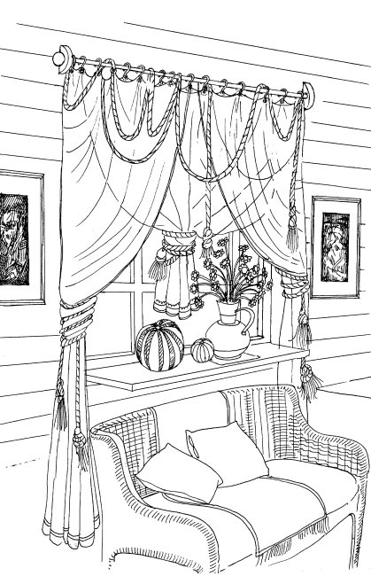
Рис. 37. Модель подвески штор и организации фрагмента интерьера перед окном
Обе половины диска крепятся к стене длинными шурупами, штанга продевается в их отверстия, ее концы, выходящие из отверстий вправо и влево, увеличиваются деревянными шарами, цилиндрами с отверстиями или фигурными навершиями.
На одни и те же крючки, можно вешать разные шторы. Шторы, снабженные крючками, можно вешать друг на друга (или друг под друга) в два и даже три слоя – на одну штангу, не теряя возможности передвигать их вдоль по ней. Например, верхним слоем можно повесить две плотные шторы, которые задвигаются ночью; под них ситцевые, цветные – дневные, которые можно дополнить прозрачными, кружевными. Для этих трех слоев не нужен сложный трехполосный карниз (дизайн которого более подходит для окон городской квартиры) с его малоудобной системой крепления на мелкие пластмассовые крючки.
На рис. 37показан один из возможных конкретных вариантов подвески двухслойных гардин на крючки, на одну штангу. Справа и слева две длинные гардины подвязываются толстыми шнурами или плетеными, декоративными веревками с узлами и кистями. А в середине окна подвешена более короткая занавеска (в опущенном состоянии доходящая до уровня подоконника), которая так же, как и боковые шторы, собрана в складки и свисает над подоконником, охваченная несколько раз такой же толстой веревкой. Отрезок такой веревки 2–3 метра длиной повешен сверху штор на штангу и выполняет исключительно декоративную функцию, свисая дугами вниз, уравновешенный тяжелыми узлами с кистями.
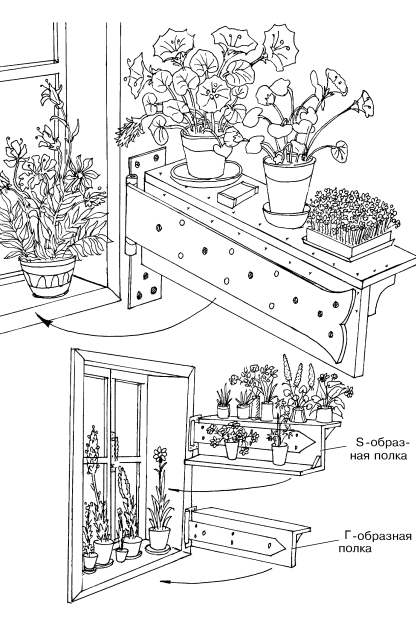
Рис. 38. Варианты поворачивающихся на петлях консолей для цветов. Использование больших (воротных) петель. Такая конструкция позволяет свободно открывать окна и не строить для цветов дополнительных полок в коробке рамы
Совет
Подоконник под такими тяжелыми, объемными шторами лучше сделать широким. Его можно украсить кувшином с цветами, полосатыми или желтыми тыквами с огорода.
Фланкировать окно с такими шторами можно двумя небольшими живописными пейзажами в рамах или гравюрами под стеклом.
Перед широким подоконником (на который вечером можно поставить лампу, стакан с чаем, положить книгу) – удачно встанет небольшой (в ширину окна или немного длиннее) плетеный диван с мягким матрасом, пледом и подушками. Рядом можно поставить тумбочку, столик, торшер, скамеечку для ног и т. д. Под окном можно поставить и банкетку (мягкую скамеечку), обтянутую той же тканью, что и на окнах. Ткань боковых штор может отличаться от ткани центральной шторы – как по качеству, так и по цвету. И та и другая ткань подойдет в качестве чехлов для подушек на диване под окном, обтяжки матраса, скатерти на столе, салфеток на подоконнике или тумбочке.
Поворачивающиеся петли на окнах. Если в доме много цветов, которые растут в горшках и которые нельзя выносить на улицу (прямые лучи солнца, дождь, ветер, насекомые и т. п.), то есть, если их постоянное место на подоконнике и этого места не хватает даже при широких подоконниках и на полках под ним, то можно сделать очень простую, красивую и мобильную конструкцию полок в плоскости самого окна. Обычно такие полки, строящиеся в коробке оконной рамы, затрудняют процесс открывания и закрывания занавесок, но главное – приводят к совершенной невозможности открывать окна, если их створки распахиваются внутрь. Да и раскрывающиеся на улицу створки оконных рам бывает очень трудно и неудобно выталкивать наружу, пробираясь руками между зарослями цветов на полках и между их этажами в оконной коробке (рис. 38).
Поэтому весьма рационален и красив способ расстановки цветочных горшков на полках, закрепленных лишь одним концом на петле, привинченной либо к наличнику (правому или левому – в зависимости от расстановки предметов мебели у окна), либо (если наличники узкие или их нет вовсе) к стене как можно ближе к краю коробки окна. Поскольку петлям приходится нести достаточно большую нагрузку (вес самой полки, плюс один-два ряда горшков с цветами), а каждую полку может нести только одна петля, то она должна быть достаточно массивной (воротной) и иметь обязательно одну длинную крепежную пластину – «язык», который можно и удлинить, нарастив на трех винтах имеющуюся, но недостаточно длинную пластину. Желательно, чтобы длина языка достигала длины полки – для более прочного ее крепления шурупами – на всем протяжении.
Одинарная (одноэтажная) полка имеет в сечении форму буквы «Г», поскольку состоит из двух, скрепленных под углом 90 градусов, досок одинаковой длины (чуть меньшей, чем ширина окна внутри коробки) и одинаковой ширины. Доски сшиваются длинными, тонкими шурупами; толщина досок от 3 см до 3,5 см. Возможна и более тяжелая, но и более вместительная конструкция – полка, в сечении имеющая форму латинской «S». Она состоит из трех досок – несущей вертикальной и двух несомых – горизонтальных, образующих плоскости ступенек, на которые и ставятся цветы.
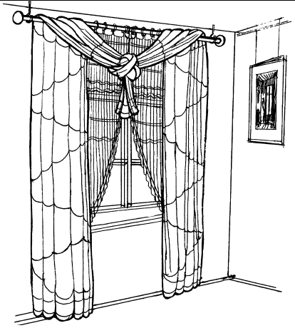
Рис. 39. Комбинация из двух штор разных цветов и разной плотности. Внутренняя (тонкая) штора вешается на кольцах на штангу, подвешенную к потолку на двух крючках. Вторая (более плотная) длинная штора завязывается простым узлом и перекидывается через штангу. Тяжесть узла уравновешивается массой спадающих до пола длинных складок
Для того, чтобы открыть оконные рамы, достаточно развернуть двигающуюся на петле полку, поставив ее перпендикулярно плоскости окна. В некоторых случаях в таком положении полки можно и оставить, если это удачно сочетается с мебелью, поставленной по обеим сторонам окна и под ним.